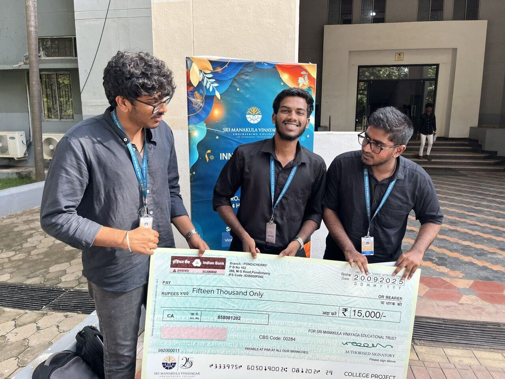

BillianceAI
Founding engineer · 2024 to nowStore owners were losing stock they could not explain, and nobody had time to watch CCTV. I built a tool that watches for them and sends a clip to the person who can act on it.

First of 700+ teams from 50+ colleges at Innovators' Day 2025, presenting BillianceAI.
- Friction
- A 15,000 sq ft store had an ₹89,970 stock gap and no way to tell where it went. Staff couldn't watch screens all day, and false alarms made them stop trusting alerts.
- Tools tested
- Qwen2.5-VL-7BLLaVA-1.5-7BYOLOv8ByteTrack
- Built
- Real-time detection with an instant alert carrying a replayable clip, so staff check the footage before acting
- A dashboard non-technical staff use every day, plus payments and alerting integrations
- Plain-language onboarding docs so stores can run it without calling me
- Listened
- Staff said too many alerts were wrong. I added a verification step, and false positives fell 30%.
32,567Customers in 1-month pilot
28Confirmed thefts caught
−30%False positives
11Hackathon podiums & awards